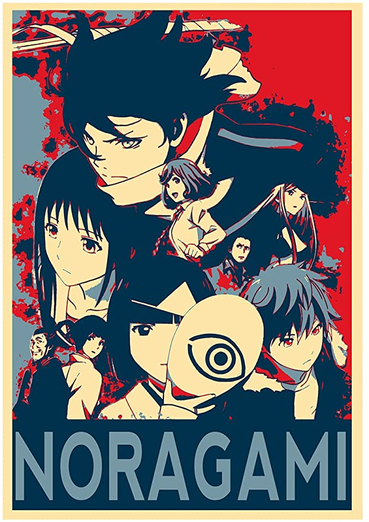
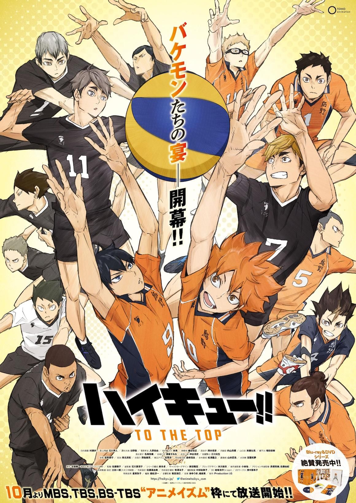

Anime de gen Comedie:

NORAGAMI
Unul dintre acești vechi zei, numit Yato, nu este deloc dispus să dispară, așa că primește un loc de muncă ca „zeu de gardă” și îndeplinește cererile oamenilor, vânând simultan fantome. Fata pe care a întâlnit-o, Hiyori, și noul partener spiritual, Yukine, devin prieteni adevărați ai zeului fără adăpost Noragami și îl ajută să-și îndeplinească cel mai prețuit vis - să-și construiască propriul templu, fără să bănuiască ce ascunde un trecut întunecat plin de durere și durere. în spatele nepăsării lui Yato.

Unul dintre acești vechi zei, numit Yato, nu este deloc dispus să dispară, așa că primește un loc de muncă ca „zeu de gardă” și îndeplinește cererile oamenilor, vânând simultan fantome. Fata pe care a întâlnit-o, Hiyori, și noul partener spiritual, Yukine, devin prieteni adevărați ai zeului fără adăpost Noragami și îl ajută să-și îndeplinească cel mai prețuit vis - să-și construiască propriul templu, fără să bănuiască ce ascunde un trecut întunecat plin de durere și durere. în spatele nepăsării lui Yato.
HAIKYUU!!!
Povestea îl urmează pe Shōyō Hinata, un băiat hotărât să devină un mare jucător de volei în ciuda staturii sale mici. El îl întâlnește pe Kageyama, prințul de gheață, cu care urmează mai apoi să creeze un duet perfect.
Povestea îl urmează pe Shōyō Hinata, un băiat hotărât să devină un mare jucător de volei în ciuda staturii sale mici. El îl întâlnește pe Kageyama, prințul de gheață, cu care urmează mai apoi să creeze un duet perfect.
 Elaborat de Poștaru Adelina
Elaborat de Poștaru Adelina